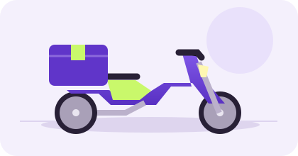
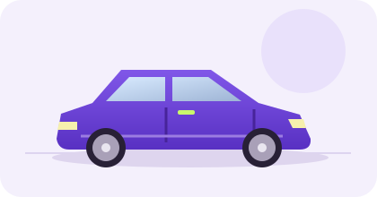
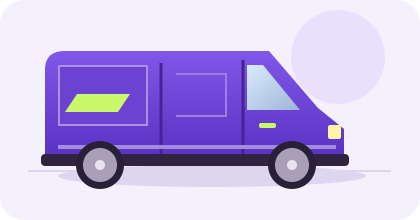
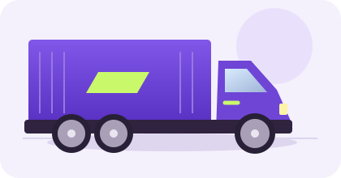

Conte o que vai.
Informe os itens, o peso e os endereços de coleta e destino. Detalhes fazem a diferença.
Da pequena encomenda à próxima grande mudança. Encontre o veículo certo e acompanhe cada etapa da sua entrega.

Para pessoas e negócios que precisam ir além.
Encomendas do dia a diaVolumes de todos os tamanhosCaminhos mais organizadosVocê informa o que precisa transportar. A Movee ajuda a organizar o restante, do pedido ao acompanhamento.
Informe os itens, o peso e os endereços de coleta e destino. Detalhes fazem a diferença.
Compare as capacidades dos veículos e consulte a cotação antes de confirmar seu pedido.
Consulte as atualizações registradas pelo entregador, da coleta à confirmação de recebimento.
Da bicicleta ao caminhão. A escolha considera peso e dimensões, para que cada mercadoria tenha seu lugar.

Pequenas encomendas, grandes conexões.
LEVE E COMPACTA
Espaço para os itens do seu dia.
VERSÁTIL NO DIA A DIA
Mais volume para o seu próximo passo.
ESPAÇO QUE ACOMPANHA
Quando o seu destino pede mais.
PARA GRANDES VOLUMES11 categorias de veículos.
Capacidades e tarifas disponíveis na solicitação.
Seu código conecta você ao histórico da entrega. Consulte o status, os horários registrados e a previsão informada em um só lugar.
Encontrar minha entregaIlustração da interface. Não representa uma entrega ou localização real.
Documentos em armazenamento privado e acesso restrito às pessoas autorizadas.
Consulte os componentes da cotação e revise os dados antes de seguir com a solicitação.
Salve endereços, consulte seu histórico e reúna as entregas da sua rotina ou do seu negócio.
Algumas respostas para você dar o próximo passo com mais clareza.
Conhecer a central de ajudaInforme quantidade, peso e dimensões da mercadoria na solicitação. O sistema compara esses dados com as capacidades das categorias e impede escolhas incompatíveis.
Sim. O cadastro de vendedor atende pessoas e negócios com CPF ou CNPJ. Cadastre o endereço da loja e use-o na coleta das suas entregas.
Esta versão mostra o histórico de status registrado pelos entregadores. Não há integração de GPS em tempo real. Qualquer ilustração de mapa é identificada como ilustrativa.
A Movee é um projeto acadêmico. As tarifas iniciais são fictícias e podem ser configuradas pela administração. O modo de pagamento é identificado na etapa correspondente.
Uma encomenda, uma necessidade, um novo caminho.